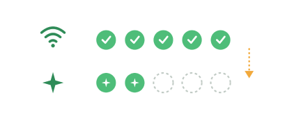
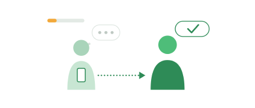
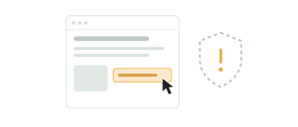
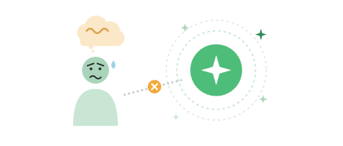
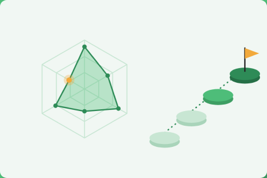
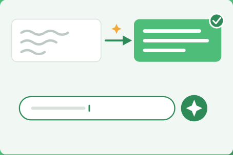
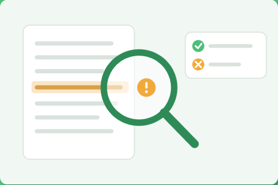

보편화된 인터넷과 실질적 활용 격차

데이터 기반 개인형 AI 역량 훈련 플랫폼, 디딤돌




디딤돌이 제안하는 맞춤형 4단계 해결 솔루션

사용자의 낮은 디지털 자신감과 숨은 취약 영역을 데이터
기반으로 정확히 파악하여 개인별 맞춤 학습 로드맵을 자
동으로 설계합니다.

AI 사용법 미숙과 질문 작성의 어려움을 해소할 수 있도록,
목적과 맥락에 맞는 AI 활용 전략을
실전 미션에서 직접 연습할 수 있습니다.
AI 비이용 원인으로 꼽히는 보안 문제와 정보 신뢰에 대한
불안을 해소하기 위해 상황별 안전 활용 수칙을 체계적으로
실습합니다.

AI가 생성한 답변의 오류를 직접 찾아내는 심화 실습을 통해,
정보 판별력과 결과 검증 역량을 확실하게 끌어올립니다.